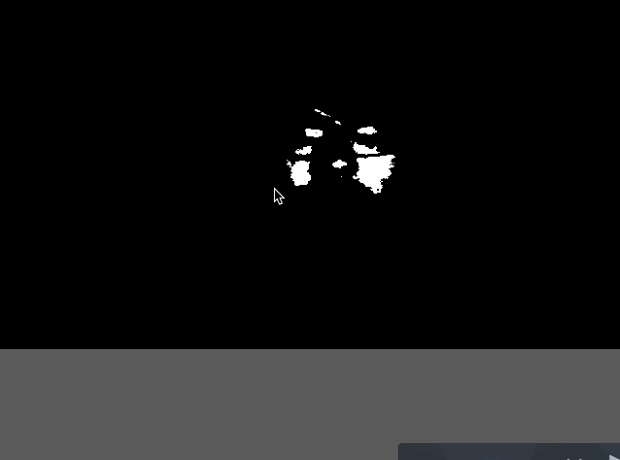
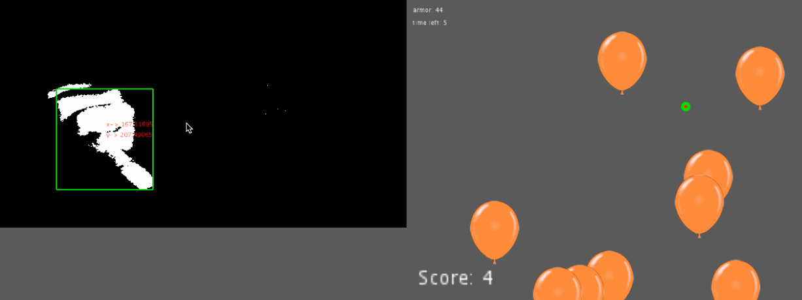

Darkroom Balloon zapper
This is a game that follows the idea that you do not need to touching anything to play the game.

How the game work
This game can only be played in a darkroom due to how I implemented the game. The camera captures lights base on the reflection from the srceen light. The game tracks the center of mass of the light captured and will do actions base on the shape of the light captured. A decrease in the width of the lighted up area will zap all the balloons under the cursor and an increase in width will start the game.  
Game mechanics
After game starts, you will have 50 armor and 15 secs to zap all the balloons you can. You earn a score by zapping a balloon and the goal of this game is to zap as many balloons as possible.
Tools Used
A awesome video that is best watched in Safari browser.